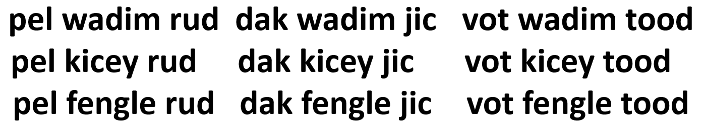
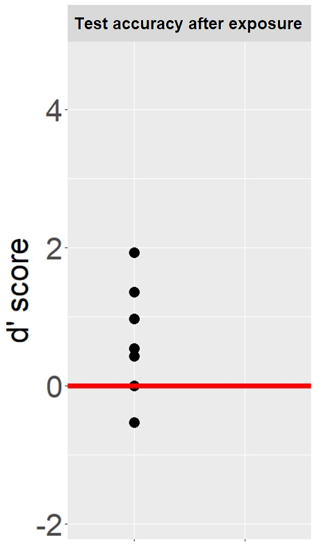

I'm originally from Mendoza, Argentina. I'm an educator and researcher in Linguistics. I teach Spanish and study how people learn and process a second language. When I'm not working, I love cooking, traveling, studying languages, and learning different dances and crafts.
Soy orginaria de Mendoza, Argentina. Soy docente e investigadora en lingüística. Doy clases de español y estudio cómo las personas aprenden y procesan una segunda lengua. Cuando no estoy trabajando, me encanta cocinar, viajar, estudiar idiomas y aprender distintos tipos de danza y manualidades.
I am interested in the processes that adults undergo when learning a second language (L2), and how lab-based research can inform and improve classroom practices. I study different aspects of L2 acquisition, such as vocabulary learning, semantic network development, statistical learning, and pronunciation of L2 phonetic contrasts. I also have experience studying lexical retrieval in L2 learners and heritage speakers, anticipatory processes in L2 speakers, and translation studies.
Estoy interesada en el proceso que atraviesan los adultos cuando están aprendiendo una segunda lengua (L2), y también cómo la investigación experimental puede informar y mejorar las prácticas de enseñanza. Estudio diferentes aspectos de la adquisición de L2, como aprendizaje de vocabulario, desarrollo de redes semánticas, aprendizaje estadístico y pronunciación de contrastes fonéticos en la L2. También tengo experiencia en el estudio del acceso léxico en estudiantes de L2 y hablantes de herencia, procesos anticipatorios en hablantes de L2 y estudios de traducción.
This projects studies how different exposure to L2 vocabulary shapes the connections in the mental lexicon, using network modeling. I am interested in how we can teach vocabulary to build a lexicon that allows for effective word retrieval during spontaneous communication. Stay tunned for results soon!


Statistical learning: people can learn language patterns just by listening to continuous speech.
Pattern learning is also possible between non-adjacent elements.
In this study, participants will be exposed to non-adjacent patterns in isolation and with background noise or overlapping speech. Preliminary results suggest that adults can learn these patterns in isolation. Most participants scored above chance (red line on figure on the right). Stay tunned for the next stages of this project! You can find the full methodology here.
I have experience teaching foreign languages, translation, linguistics, and other courses in Argentina and the United States. In Mendoza, Argentina I have worked in Universidad Nacional de Cuyo and Universidad del Aconcagua, teaching introductory linguistics courses as well as production and comprehension of academic texts in Med School and Law School. In the United States I have taught at Louisiana State University and The Pennsylvania State University, courses in Spanish and Italian. Additionally, I have experience in higher ed education administration, as I worked for two years as Content Supervisor for the Spanish Basic Language Program at Penn State.
Tengo experiencia dando clases de idioma, traducción, lingüística y otros cursos en Argentina y en Estados Unidos. En Mendoza, Argentina he trabajado en la Universidad Nacional de Cuyo y en la Universidad del Aconcagua, dando cursos de introducción a la lingüística así como también cursos de producción y comprensión de textos académicos, para estudiantes de Medicina y de Derecho. En Estados Unidos he trabajado en Louisiana State University y The Pennsylvania State University, enseñando cursos de español e italiano. Además, tengo experiencia en cargos administrativos en educación superior, ya que trabajé por dos años como Supervisora de Contenido en el Programa de Lengua Básica Española en Penn State.
When I'm not working, I love doing different activities to relax. I really enjoy dancing, and I've taken classes in different styles through the years. Also, I recently picked up embroidery, and I'm still learning basic techniques. Finally, one of my biggest passions is traveling, and I try to visit a new city every change I get. See some pics of my hobbies in the photo gallery below!
Cuando no estoy trabajando, me encanta hacer diferentes actividades para relajarme. Bailar es una actividad que disfruto mucho, y he tomado clases de diferentes estilos a lo largo de los años. También, recientemente empecé a bordar, y todavía estoy aprendiendo las técnicas básicas. Finalmente, una de mis mayores pasiones es viajar, y trato de visitar una ciudad nueva cada vez que puedo. ¡Mirá algunas fotos de mis hobbies en la galería de imágenes!


Follow me!
¡Seguime!